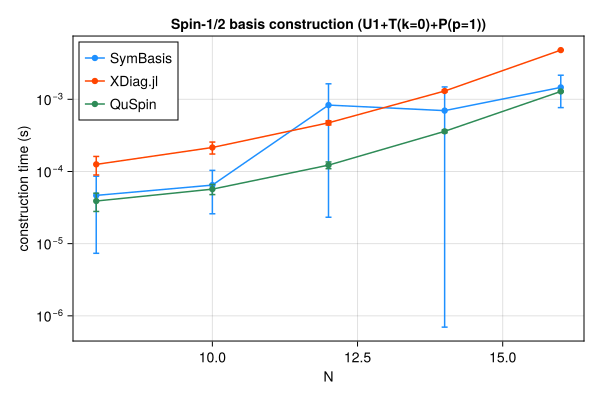
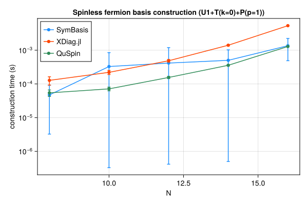
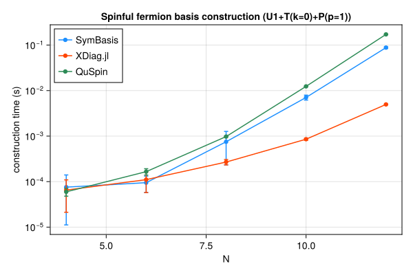
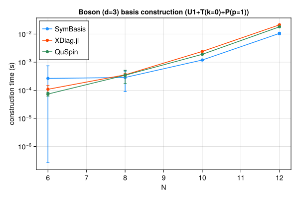

Symmetry-resolved basis construction and representative-state lookup speed, compared against XDiag.jl and QuSpin. SymBasis is benchmarked against its own dev checkout; XDiag.jl and QuSpin are whatever their latest released versions were at the time this page was generated. Regenerated automatically on every SymBasis release.
Threads are left at each library's own defaults (JULIA_NUM_THREADS=auto, OMP_NUM_THREADS unset) rather than pinned to 1 – these numbers reflect out-of-the-box performance, not a strictly single-threaded comparison.
Sweep: BENCH_SWEEP=quick
plot_construction("spin", "Spin-1/2")

| N | config | dim | SymBasis | XDiag | QuSpin | XDiag/SymBasis | QuSpin/SymBasis |
|---|
| 8 | U1 | 70 | 3.061e-05 ± 3.8e-05 s | 4.85e-06 ± 7.9e-06 s | 3.069e-05 ± 1.7e-05 s | 0.16x | 1.00x |
| 8 | U1+T(k=0) | 10 | 6.941e-05 ± 6.9e-05 s | 5.401e-05 ± 3.2e-05 s | 3.857e-05 ± 1.4e-05 s | 0.78x | 0.56x |
| 8 | U1+T(k=0)+P(p=1) | 8 | 4.663e-05 ± 3.9e-05 s | 0.0001254 ± 3.6e-05 s | 3.896e-05 ± 1.1e-05 s | 2.69x | 0.84x |
| 10 | U1 | 252 | 9.136e-05 ± 0.00013 s | 5.023e-06 ± 8.2e-06 s | 2.71e-05 ± 7.2e-06 s | 0.05x | 0.30x |
| 10 | U1+T(k=0) | 26 | 4.618e-05 ± 3.8e-05 s | 0.000101 ± 3e-05 s | 4.408e-05 ± 9.1e-06 s | 2.19x | 0.95x |
| 10 | U1+T(k=0)+P(p=1) | 16 | 6.476e-05 ± 3.9e-05 s | 0.000215 ± 4.1e-05 s | 5.691e-05 ± 9.1e-06 s | 3.32x | 0.88x |
| 12 | U1 | 924 | 0.0005064 ± 0.00082 s | 5.601e-06 ± 8.6e-06 s | 3.499e-05 ± 6.9e-06 s | 0.01x | 0.07x |
| 12 | U1+T(k=0) | 80 | 0.000194 ± 9.4e-05 s | 0.0002701 ± 3.7e-05 s | 8.598e-05 ± 1.5e-05 s | 1.39x | 0.44x |
| 12 | U1+T(k=0)+P(p=1) | 50 | 0.0008313 ± 0.00081 s | 0.0004724 ± 3.2e-05 s | 0.0001224 ± 1.3e-05 s | 0.57x | 0.15x |
| 14 | U1 | 3432 | 0.0006153 ± 0.001 s | 5.955e-06 ± 8.2e-06 s | 6.138e-05 ± 8.8e-06 s | 0.01x | 0.10x |
| 14 | U1+T(k=0) | 246 | 0.0002276 ± 0.00017 s | 0.0009282 ± 3.4e-05 s | 0.0002341 ± 1.6e-05 s | 4.08x | 1.03x |
| 14 | U1+T(k=0)+P(p=1) | 133 | 0.0006966 ± 0.00079 s | 0.001303 ± 4.2e-05 s | 0.0003597 ± 1.7e-05 s | 1.87x | 0.52x |
| 16 | U1 | 12870 | 0.0009425 ± 0.00089 s | 8.219e-06 ± 1e-05 s | 0.0001519 ± 1.2e-05 s | 0.01x | 0.16x |
| 16 | U1+T(k=0) | 810 | 0.0006204 ± 0.00038 s | 0.003845 ± 3e-05 s | 0.0007936 ± 1.6e-05 s | 6.20x | 1.28x |
| 16 | U1+T(k=0)+P(p=1) | 440 | 0.001462 ± 0.00069 s | 0.004804 ± 3.8e-05 s | 0.001285 ± 1.9e-05 s | 3.29x | 0.88x |
| N | config | nsamples | SymBasis | XDiag | QuSpin |
|---|
| 16 | U1+T(k=0)+P(p=1) | 10000 | 3.433e-07 ± 2e-09 s | N/A (no decoupled API) | 2.075e-07 ± 2.6e-09 s |
plot_construction("fermion", "Spinless fermion")

| N | config | dim | SymBasis | XDiag | QuSpin | XDiag/SymBasis | QuSpin/SymBasis |
|---|
| 8 | U1 | 70 | 4.849e-05 ± 7e-05 s | 5.113e-06 ± 8.2e-06 s | 3.767e-05 ± 1.1e-05 s | 0.11x | 0.78x |
| 8 | U1+T(k=0) | 9 | 4.234e-05 ± 4.4e-05 s | 5.588e-05 ± 3e-05 s | 4.841e-05 ± 1.3e-05 s | 1.32x | 1.14x |
| 8 | U1+T(k=0)+P(p=1) | 6 | 4.721e-05 ± 4.4e-05 s | 0.0001276 ± 3.5e-05 s | 5.436e-05 ± 1.2e-05 s | 2.70x | 1.15x |
| 10 | U1 | 252 | 3.578e-05 ± 4.1e-05 s | 5.137e-06 ± 8.2e-06 s | 3.778e-05 ± 7.2e-06 s | 0.14x | 1.06x |
| 10 | U1+T(k=0) | 26 | 5.034e-05 ± 3.9e-05 s | 0.0001068 ± 2.9e-05 s | 5.842e-05 ± 8.5e-06 s | 2.12x | 1.16x |
| 10 | U1+T(k=0)+P(p=1) | 16 | 0.0003285 ± 0.00052 s | 0.0002207 ± 3.1e-05 s | 7.138e-05 ± 9.1e-06 s | 0.67x | 0.22x |
| 12 | U1 | 924 | 8.635e-05 ± 7e-05 s | 5.406e-06 ± 8.1e-06 s | 4.77e-05 ± 7.8e-06 s | 0.06x | 0.55x |
| 12 | U1+T(k=0) | 76 | 0.0006236 ± 0.00094 s | 0.0002968 ± 3.1e-05 s | 0.0001101 ± 9.8e-06 s | 0.48x | 0.18x |
| 12 | U1+T(k=0)+P(p=1) | 33 | 0.0004158 ± 0.00078 s | 0.0004865 ± 4.4e-05 s | 0.0001555 ± 1.2e-05 s | 1.17x | 0.37x |
| 14 | U1 | 3432 | 0.0005477 ± 0.00064 s | 6.351e-06 ± 8.9e-06 s | 7.398e-05 ± 1.7e-05 s | 0.01x | 0.14x |
| 14 | U1+T(k=0) | 246 | 0.0008006 ± 0.00086 s | 0.00104 ± 4.8e-05 s | 0.0002312 ± 1.6e-05 s | 1.30x | 0.29x |
| 14 | U1+T(k=0)+P(p=1) | 113 | 0.0005012 ± 0.00052 s | 0.001404 ± 5.8e-05 s | 0.000357 ± 1.5e-05 s | 2.80x | 0.71x |
| 16 | U1 | 12870 | 0.0005073 ± 0.00017 s | 8.222e-06 ± 1e-05 s | 0.0001503 ± 9e-06 s | 0.02x | 0.30x |
| 16 | U1+T(k=0) | 809 | 0.0005168 ± 6.2e-05 s | 0.00441 ± 0.00012 s | 0.0007974 ± 1.1e-05 s | 8.53x | 1.54x |
| 16 | U1+T(k=0)+P(p=1) | 422 | 0.001359 ± 0.00087 s | 0.00534 ± 4.5e-05 s | 0.001289 ± 1.7e-05 s | 3.93x | 0.95x |
| N | config | nsamples | SymBasis | XDiag | QuSpin |
|---|
| 16 | U1+T(k=0)+P(p=1) | 10000 | 4.081e-07 ± 1.7e-09 s | N/A (no decoupled API) | 1.97e-06 ± 8.4e-08 s |
plot_construction("spinful_fermion", "Spinful fermion")

| N | config | dim | SymBasis | XDiag | QuSpin | XDiag/SymBasis | QuSpin/SymBasis |
|---|
| 4 | U1 | 36 | 4.201e-05 ± 7.3e-05 s | 6.885e-06 ± 1e-05 s | 4.483e-05 ± 1.4e-05 s | 0.16x | 1.07x |
| 4 | U1+T(k=0) | 10 | 0.0001392 ± 0.00018 s | 4.125e-05 ± 3.7e-05 s | 5.385e-05 ± 1.2e-05 s | 0.30x | 0.39x |
| 4 | U1+T(k=0)+P(p=1) | 6 | 7.563e-05 ± 6.4e-05 s | 6.517e-05 ± 4.4e-05 s | 5.963e-05 ± 1.2e-05 s | 0.86x | 0.79x |
| 6 | U1 | 400 | 0.0002299 ± 0.00024 s | 5.815e-06 ± 1.1e-05 s | 5.222e-05 ± 1e-05 s | 0.03x | 0.23x |
| 6 | U1+T(k=0) | 68 | 0.0001684 ± 0.00028 s | 5.4e-05 ± 3.4e-05 s | 0.000105 ± 1.1e-05 s | 0.32x | 0.62x |
| 6 | U1+T(k=0)+P(p=1) | 38 | 9.472e-05 ± 3.7e-05 s | 0.0001105 ± 5.3e-05 s | 0.0001655 ± 2.6e-05 s | 1.17x | 1.75x |
| 8 | U1 | 4900 | 0.0002796 ± 2.9e-05 s | 6.286e-06 ± 1.1e-05 s | 0.0001623 ± 1e-05 s | 0.02x | 0.58x |
| 8 | U1+T(k=0) | 618 | 0.000409 ± 6.8e-05 s | 0.0033 ± 0.0067 s | 0.0005695 ± 1.5e-05 s | 8.07x | 1.39x |
| 8 | U1+T(k=0)+P(p=1) | 318 | 0.000751 ± 0.00052 s | 0.000269 ± 3.7e-05 s | 0.0009759 ± 1.8e-05 s | 0.36x | 1.30x |
| 10 | U1 | 63504 | 0.003193 ± 0.0007 s | 6.557e-06 ± 1.1e-05 s | 0.001147 ± 1.2e-05 s | 0.00x | 0.36x |
| 10 | U1+T(k=0) | 6352 | 0.004669 ± 0.00086 s | 0.0003885 ± 4.9e-05 s | 0.007278 ± 5.3e-05 s | 0.08x | 1.56x |
| 10 | U1+T(k=0)+P(p=1) | 3212 | 0.007067 ± 0.00088 s | 0.0008544 ± 4.4e-05 s | 0.01238 ± 4.9e-05 s | 0.12x | 1.75x |
| 12 | U1 | 853776 | 0.02478 ± 0.017 s | 7.272e-06 ± 1.1e-05 s | 0.01667 ± 4.5e-05 s | 0.00x | 0.67x |
| 12 | U1+T(k=0) | 71188 | 0.05034 ± 0.0015 s | 0.00237 ± 0.0013 s | 0.1015 ± 0.00037 s | 0.05x | 2.02x |
| 12 | U1+T(k=0)+P(p=1) | 35694 | 0.08804 ± 0.0039 s | 0.004964 ± 7.8e-05 s | 0.1719 ± 0.0008 s | 0.06x | 1.95x |
| N | config | nsamples | SymBasis | XDiag | QuSpin |
|---|
| 12 | U1+T(k=0)+P(p=1) | 10000 | 1.374e-06 ± 4.3e-09 s | N/A (no decoupled API) | 2.379e-06 ± 8.6e-08 s |
plot_construction("boson", "Boson (d=3)")

| N | config | dim | SymBasis | XDiag | QuSpin | XDiag/SymBasis | QuSpin/SymBasis |
|---|
| 6 | U1 | 141 | 3.079e-05 ± 3.4e-05 s | 5.902e-06 ± 7.9e-06 s | 4.913e-05 ± 1.3e-05 s | 0.19x | 1.60x |
| 6 | U1+T(k=0) | 26 | 4.994e-05 ± 3.6e-05 s | 5.923e-05 ± 3e-05 s | 6.569e-05 ± 1.2e-05 s | 1.19x | 1.32x |
| 6 | U1+T(k=0)+P(p=1) | 18 | 0.0002646 ± 0.00048 s | 0.0001087 ± 3.7e-05 s | 7.356e-05 ± 1.1e-05 s | 0.41x | 0.28x |
| 8 | U1 | 1107 | 0.0001551 ± 8.1e-05 s | 7.634e-06 ± 8.7e-06 s | 8.448e-05 ± 8.5e-06 s | 0.05x | 0.54x |
| 8 | U1+T(k=0) | 142 | 0.0003836 ± 0.00051 s | 0.000242 ± 3.2e-05 s | 0.0002202 ± 1.5e-05 s | 0.63x | 0.57x |
| 8 | U1+T(k=0)+P(p=1) | 84 | 0.0002857 ± 0.0002 s | 0.0003552 ± 3.5e-05 s | 0.0003435 ± 0.00017 s | 1.24x | 1.20x |
| 10 | U1 | 8953 | 0.0004586 ± 0.00023 s | 1.287e-05 ± 1.1e-05 s | 0.0003266 ± 3.9e-05 s | 0.03x | 0.71x |
| 10 | U1+T(k=0) | 902 | 0.0008019 ± 7.4e-05 s | 0.001925 ± 3.8e-05 s | 0.00161 ± 2.3e-05 s | 2.40x | 2.01x |
| 10 | U1+T(k=0)+P(p=1) | 486 | 0.001194 ± 5.3e-05 s | 0.002413 ± 3.7e-05 s | 0.001904 ± 2.3e-05 s | 2.02x | 1.59x |
| 12 | U1 | 73789 | 0.003494 ± 0.00093 s | 3.045e-05 ± 1.2e-05 s | 0.002298 ± 4.5e-05 s | 0.01x | 0.66x |
| 12 | U1+T(k=0) | 6166 | 0.006099 ± 0.00072 s | 0.01782 ± 4.3e-05 s | 0.01517 ± 3e-05 s | 2.92x | 2.49x |
| 12 | U1+T(k=0)+P(p=1) | 3179 | 0.01058 ± 0.0011 s | 0.02129 ± 4.7e-05 s | 0.01809 ± 4.9e-05 s | 2.01x | 1.71x |
| N | config | nsamples | SymBasis | XDiag | QuSpin |
|---|
| 12 | U1+T(k=0)+P(p=1) | 10000 | 1.837e-06 ± 4.5e-09 s | N/A (no decoupled API) | 3.764e-07 ± 5.2e-08 s |